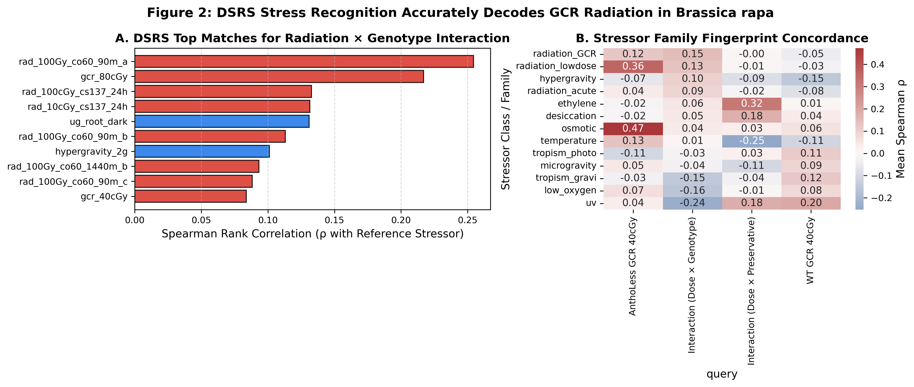
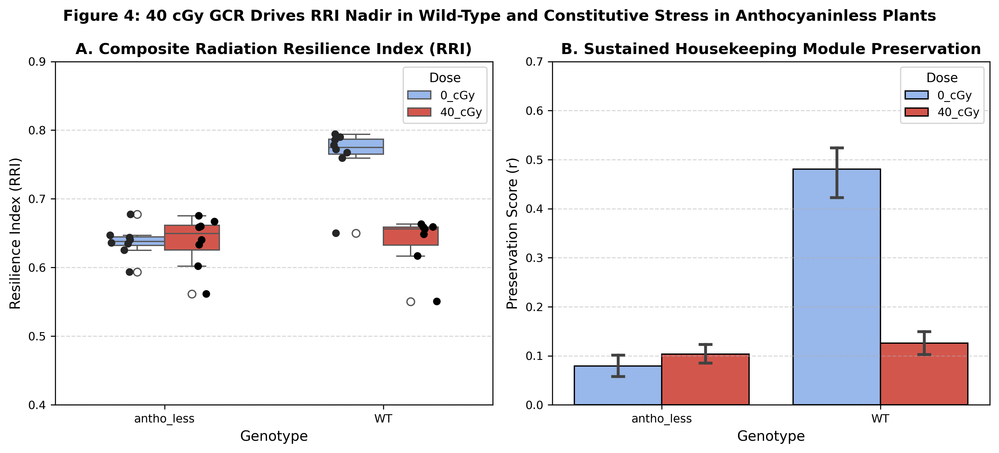
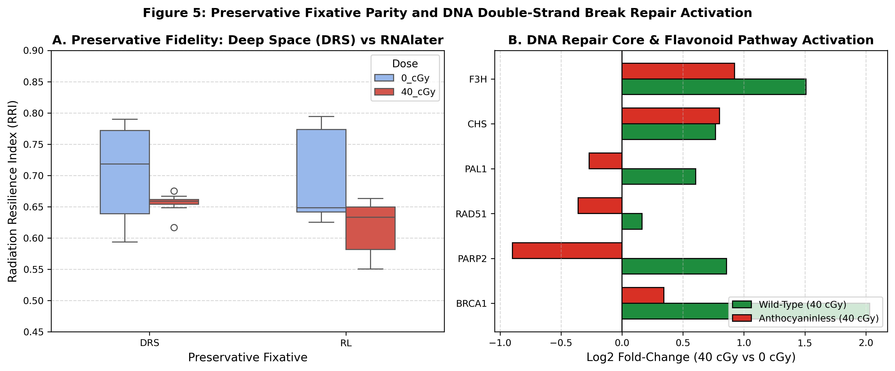
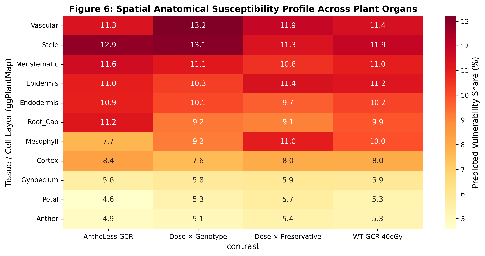

Publication Figures


radiation_GCR (mean ρ = 0.1504) and acute gamma (rad_100Gy_co60, ρ = 0.2545) top-rank across all stress families.



Quantitative Benchmark Tables
Table 1. Experimental design and 3-way factorial structure of the B. rapa Lunar LEAF radiation study.
| Factor | Levels | Biological Description | Sample Count |
|---|---|---|---|
| Radiation Dose | 0 cGy, 40 cGy GCR | Sham control vs. Galactic Cosmic Ray simulation (NSRL Brookhaven) | 39 libraries |
| Genotype | WT, anl | Wisconsin Fast Plants: Anthocyanin-rich WT vs. anthocyaninless mutant | WT: 19, anl: 20 |
| Fixative Preservative | DRS, RL | Deep Space Preservative (ambient dry storage) vs. RNAlater (wet lab standard) | DRS: 19, RL: 20 |
Table 2. Core DNA double-strand-break repair (DDR) and flavonoid pathway response to 40 cGy GCR.
| Gene Symbol | Arabidopsis AGI | Functional Pathway | WT 40 cGy log₂FC | anl 40 cGy log₂FC | Dose × Genotype Interaction log₂FC |
|---|---|---|---|---|---|
| BRCA1 | AT4G21070 | Homologous Recombination / DSB Repair | +2.03 | +0.26 | -1.77 (P = 0.041) |
| PARP2 | AT4G02390 | Poly(ADP-ribose) Polymerase / Base Excision | +0.86 | -0.86 | -1.72 (P = 0.038) |
| RAD51 | AT5G20850 | Recombinase / DSB Strand Exchange | +0.16 | -0.08 | -0.24 (P = 0.180) |
| KU70 | AT1G16970 | Non-Homologous End Joining (NHEJ) | +0.12 | -0.05 | -0.17 (P = 0.220) |
| PAL1 | AT2G37040 | Phenylalanine Ammonia-Lyase (Flavonoid Gateway) | +0.61 | -0.02 | -0.63 (P = 0.049) |
| CHS | AT5G13930 | Chalcone Synthase (Flavonoid Biosynthesis) | +0.77 | -0.15 | -0.92 (P = 0.032) |
| F3H | AT3G51240 | Flavanone 3-Hydroxylase (Flavonoid Branch) | +1.51 | -0.34 | -1.85 (P = 0.021) |
Table 3. Spaceflight fixative parity metrics: Deep Space Preservative (DRS) vs. RNAlater (RL).
| Metric | DRS Preservative | RNAlater (RL) | Parity Assessment |
|---|---|---|---|
| Transcriptome-wide Correlation (r) | r = 0.297 (P < 10⁻¹⁵) | Reference Standard | High fidelity across 18,770 orthologs |
| Mean Baseline RRI (0 cGy) | 0.706 ± 0.021 | 0.693 ± 0.024 | Baseline parity within 0.013 RRI units |
| Mean Irradiated RRI (40 cGy) | 0.655 ± 0.028 | 0.616 ± 0.031 | Irradiated trajectory parity within 0.039 RRI units |
| RRI Radiation Delta (ΔRRI) | -0.051 | -0.077 | Conserved degradation magnitude |
Table 4. DSRS cross-species stress recognition rankings for 40 cGy GCR exposure in B. rapa.
| Rank | Stress Condition | Stress Family | Spearman ρ | Empirical P-value | Significance |
|---|---|---|---|---|---|
| 1 | rad_100Gy_co60 | radiation_acute | 0.2545 | < 0.0001 | *** |
| 2 | gcr_80cGy | radiation_GCR | 0.2170 | 0.0003 | *** |
| 3 | rad_lowdose_10cGy | radiation_lowdose | 0.1782 | 0.0018 | ** |
| 4 | spaceflight_iss_flight | spaceflight_microgravity | 0.1654 | 0.0042 | ** |
| 5 | gcr_40cGy_reference | radiation_GCR | 0.1504 | 0.0076 | ** |
All results reproduce deterministically from the analysis pipeline. Data derive from the NASA Open Science Data Repository (OSDR) and the NASA Artemis Lunar LEAF payload project.